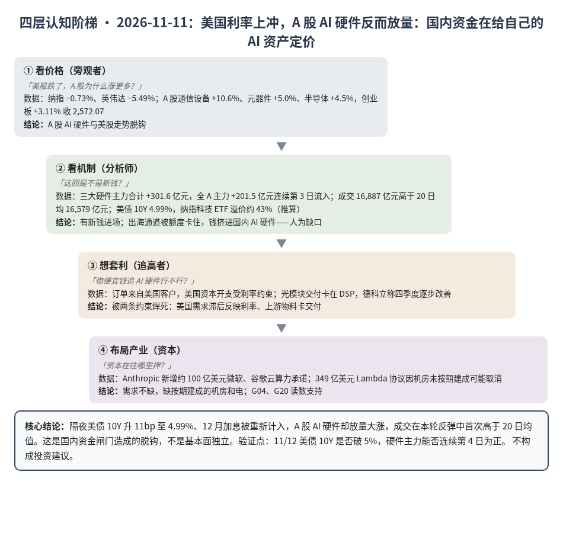
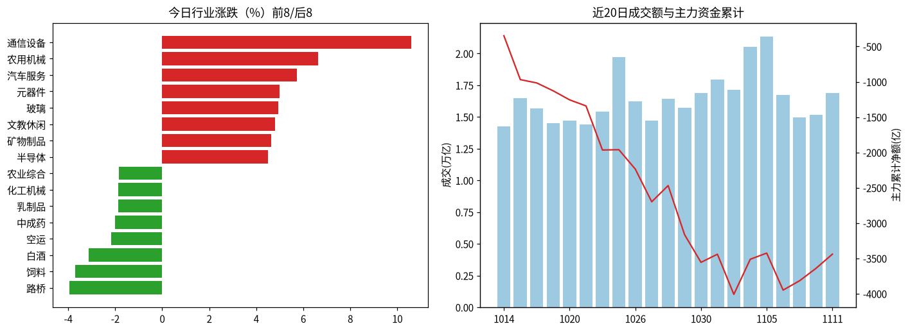
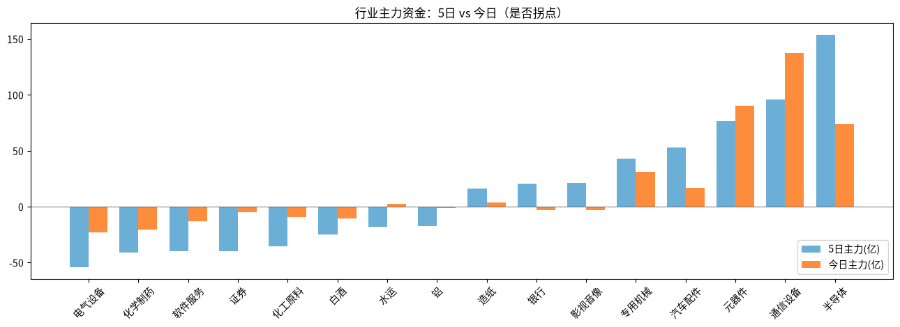

A股投研日报 · 2026-11-11（四层认知版）
- 主线
- 美国利率上冲，A 股 AI 硬件却放量大涨：国内资金在给自己的 AI 资产定价
- 最重要变化点
- 隔夜美债 10Y 升 11bp 至 4.99%、英伟达 −5.49%；A 股通信设备 +10.6%，创业板 +3.11% 收 2,572.07，成交 16,887 亿元，本轮 3 日反弹中首次高于 20 日均值
- 机制含义
- 钱从"存量换仓"变成"有新钱进场"；国内资金出海买美股的路被额度卡住（纳指 ETF 溢价约 43%），只能挤进国内 AI 硬件
- 下一个观察点
- 11/12 美债现券复市后 10Y 是否收在 5.00% 以上；若破 5% 而 A 股三大硬件主力仍为正（连续第 4 日），"脱钩"成立
本报告为基于公开数据的研究分析，不构成投资建议。
今日市场概况
数据管道速览（Tushare 收盘数据，规则生成，正文判断见下文）
- 指数：上证指数 +0.46% 收 3,680.64，创业板指 +3.11% 收 2,572.07；深证成指 +1.32%、科创50 +2.80%、上证50 -0.27%、沪深300 +0.41%、中证500 +1.01%、中证1000 +1.37%（Tushare）。
- 量能与宽度：成交 16,887 亿元（20 日均 16,579 亿元）；上涨 3,538 家 / 下跌 1,827 家，上涨占比 63.5%，个股中位数 +0.6%。
- 主力资金：全 A 主力 +201.5 亿元，连续第 3 日净流入。
- 行业：主力流入居前 通信设备（+137.3 亿）、元器件（+90.2 亿）、半导体（+74.1 亿）；流出居前 电气设备（-23.0 亿）、化学制药（-20.7 亿）、软件服务（-12.8 亿）。
- 龙虎榜 / 北向：机构专用席位合计 +9.30 亿元；沪深股通成交前五 中际旭创、新易盛、宁德时代、生益科技、寒武纪（成交额≠净买入）。
变化点
方法：四层认知阶梯 + 历史周期律。数据 Tushare（见附录）。不构成投资建议。
一、世界观定位
阶段不变，回退条件不变。变化在楚汉层：美国钱变贵（12 月加息被重新计入），中国这边的钱没有跟着变贵。世界指标今日天气（沿用 11/10 快照；今日更新因 Tushare 报 IP 数超限未完成）：整体多云：美股又贵又热，小心；钱开始变紧、AI 链有裂缝、中国经济还没回暖，留意。五盏灯本周没有变化。
二、变化一（主变化）：美国利率上冲，A 股 AI 硬件反而放量
- 看价格：「美股跌了，A 股为什么涨更多？」纳指 −0.73%，英伟达 −5.49%，微软 −2.18%（源）。A 股通信设备 +10.6%、元器件 +5.0%、半导体 +4.5%，港股光通信同步大涨（源）。
- 看机制：「这回是不是新钱？」是。三大硬件主力 +137.3、+90.2、+74.1 亿元，全 A 主力 +201.5 亿元，连续第 3 日净流入；成交高于 20 日均值 16,579 亿元。另一头，美债 10Y 收 4.99%，渣打称 12 月加息 50bp 的可能在上升（源、源）。纳指科技 ETF 收盘 2.942 元、净值 2.0612 元，溢价约 43%（推算，源）。
- 想套利：「借国内便宜的钱追 AI 硬件」这条路被两件事卡住：一是买的是美国客户的订单，美国资本开支一旦被利率压下来，订单会滞后反映；二是光模块交付卡在 DSP 芯片，德科立称四季度才逐步改善（源）。
- 布局产业：需求端仍在加码——Anthropic 新增约 100 亿美元微软、谷歌云算力承诺；但 349 亿美元的 Lambda 协议因数据中心没按期建好有取消可能（源）。推断需求不缺，缺的是按期建成的机房和电，G04、G20 读数支持。
判断：主要矛盾从"折价能否止于英伟达"转为"国内资金能不能长期无视美国利率"。今天答案是"能"，但这是资金闸门造成的人为缺口，不是基本面独立。
四、上一交易日验证点回顾（11/10 → 11/11）
| 验证点 | 结果 |
|---|---|
| 创业板收盘 ≥2,500 | 命中：2,572.07 |
| 三大硬件主力连续第 3 日为正 | 命中：合计 +301.6 亿元 |
| 本周美元指数跌破 101 | 未触发：盘中升至 102.515，四周高点 |
| 本周 DDR5 16Gb 跌破 59.66 美元 | 未触发：60.23 美元 |
五、供应链风险敞口（人工复核版）
脚本版见 risk_section_20261111.md。口径为 GB300/NVL72 当量柜年化系统价值；Δ$ 为事件类型假设模板，仅用于排序，非预测。脚本 3 条，误匹配 3 条。复核后有效断供 Δ$≈0，基线维持年化 EL 57.7 亿美元（10/21）。采集降级：巨潮公告匹配未恢复。
六、机会表（产业/环节层面，不构成投资建议）
| 环节 | 逻辑 | 证伪条件 |
|---|---|---|
| 光模块上游物料（DSP 等） | 整机交付卡在物料，议价权在上游 | 主要厂商称 DSP 不再紧张 |
| 追涨光模块整机 | 陷阱：靠资金闸门而非订单加速 | 美债破 5% 后硬件主力仍连续流入 |
中长期展望（3–12 个月与 2027）
3–12 个月：「钱开始变紧」「AI 链有裂缝」两问仍黄；A 股 AI 硬件由国内资金定价，短期可脱钩，但订单来自美国，G12 要看美国资本开支是否经得起加息。
2027：P023（四大云 2027 资本开支 ≥8,500 亿美元，概率 0.55）仍是总闸门；Lambda 违约风险提示约束在往机房和电力移（G20）。
什么会改变展望：①美债 10Y 站稳 5% 以上且任一大云下修资本开支；②纳指 ETF 溢价快速消失（资金闸门放开）；③DDR5 现货单周跌超 3%。
七、明日/本周验证点（可证伪）
- 11/12 美债 10Y 收盘 ≥5.00%。
- 11/12 三大硬件主力合计连续第 4 日为正。
- 11/12 创业板收盘守住 2,500。
- 本周 DDR5 16Gb 现货跌破 59.66 美元。

一句话总结：美国钱变贵、中国钱没变贵：A 股 AI 硬件放量脱钩。
本报告为基于公开数据的研究分析，不构成任何投资建议。
附录：市场数据（证据底稿）


| 收盘 | 今日% | 5日% | 20日% | MA20 | 成交(亿) | |
|---|---|---|---|---|---|---|
| 上证指数 | 3,680.64 | 0.46 | -0.15 | -2.30 | 3,675.29 | 7,361.55 |
| 深证成指 | 11,389.74 | 1.32 | 0.48 | -5.95 | 11,392.29 | 4,666.60 |
| 创业板指 | 2,572.07 | 3.11 | 1.07 | -10.28 | 2,585.06 | 2,058.26 |
| 科创50 | 1,300.38 | 2.80 | 2.76 | -5.79 | 1,280.00 | 764.39 |
| 上证50 | 2,765.54 | -0.27 | -1.53 | -0.41 | 2,767.12 | 1,107.55 |
| 沪深300 | 4,075.71 | 0.41 | -0.62 | -3.37 | 4,083.34 | 4,421.28 |
| 中证500 | 6,713.18 | 1.01 | 1.38 | -3.82 | 6,636.61 | 2,750.93 |
| 中证1000 | 6,669.55 | 1.37 | 2.42 | -3.41 | 6,553.07 | 3,375.33 |
行业资金热力（按5日主力净额排序，前8/后8）
| industry | 今日% | 5日% | 20日% | 今日主力(亿) | 5日主力(亿) | 资金连续天数 |
|---|---|---|---|---|---|---|
| 半导体 | 4.5 | 6.9 | -2.8 | 74.1 | 153.8 | 3.0 |
| 通信设备 | 10.6 | 7.0 | -17.1 | 137.3 | 96.2 | 3.0 |
| 元器件 | 5.0 | 6.3 | -7.0 | 90.2 | 76.6 | 3.0 |
| 汽车配件 | 3.8 | 10.4 | 19.6 | 17.1 | 53.2 | 3.0 |
| 专用机械 | 3.6 | 8.3 | 2.4 | 31.4 | 43.1 | 3.0 |
| 影视音像 | 3.1 | 16.3 | 25.6 | -2.8 | 21.0 | -1.0 |
| 银行 | -0.6 | 1.1 | 2.4 | -3.1 | 20.6 | -2.0 |
| 造纸 | -1.3 | 8.0 | 1.7 | 3.6 | 16.4 | 8.0 |
| 电气设备 | 0.4 | 3.6 | -0.2 | -23.0 | -54.0 | -1.0 |
| 化学制药 | 0.1 | 2.1 | 29.5 | -20.7 | -40.8 | -4.0 |
| 软件服务 | 0.9 | 5.0 | 7.9 | -12.8 | -39.9 | -4.0 |
| 证券 | -0.6 | -2.7 | -4.4 | -5.2 | -39.5 | -7.0 |
| 化工原料 | 1.7 | 4.8 | -3.1 | -9.0 | -35.6 | -4.0 |
| 白酒 | -3.1 | -2.3 | 10.0 | -10.7 | -25.2 | -6.0 |
| 水运 | 1.2 | -6.8 | -14.0 | 2.5 | -18.3 | 1.0 |
| 铝 | -0.2 | 0.0 | -4.8 | -1.3 | -17.1 | -2.0 |
市场情绪时间序列（近10日）
| trade_date | 成交(亿) | 上涨占比% | 主力净额(亿) | 个股中位涨跌% |
|---|---|---|---|---|
| 20261029 | 15707.1 | 14.0 | -694.9 | -2.6 |
| 20261030 | 16877.1 | 16.0 | -391.8 | -3.1 |
| 20261102 | 17951.9 | 84.0 | 114.9 | 2.0 |
| 20261103 | 17150.9 | 37.8 | -568.2 | -0.7 |
| 20261104 | 20518.9 | 83.8 | 497.2 | 1.9 |
| 20261105 | 21351.0 | 87.4 | 86.9 | 2.0 |
| 20261106 | 16716.0 | 13.6 | -524.0 | -1.9 |
| 20261109 | 14945.5 | 40.2 | 132.1 | -0.3 |
| 20261110 | 15167.5 | 76.7 | 175.5 | 1.3 |
| 20261111 | 16886.9 | 63.5 | 201.5 | 0.6 |
今日上涨3538家/下跌1827家，涨幅≥9.8% 118家、跌幅≤-9.8% 6家¹。
龙虎榜侧写：机构专用席位合计 +9.30 亿；净买入居前 东山精密(+5.34亿)、燧原科技(+4.35亿)、冰山冷热(+2.32亿)，净卖出居前 慈文传媒(-1.80亿)、凡拓数创(-1.58亿)、光迅科技(-1.34亿)。 沪深股通活跃股：成交前五为中际旭创、新易盛、宁德时代、生益科技、寒武纪（成交额≠净买入）。
注：¹涨跌停为按±9.8%阈值近似（limit_list_d无权限）。²行业为Tushare stock_basic分类自行聚合（sw_daily/ths_daily/行业资金流接口无权限），成交加权、剔除N/C新股，成分≥8只。³主力=大单+特大单净额（moneyflow）。⁴2024年8月起北向每日净买入停止披露，moneyflow_hsgt/hsgt_top10数值为成交口径，不可解读为净流入。⁵新闻/公告接口无权限，改用新浪财经7x24公开快讯自动抓取+人工补充。
接口状态：trade_cal:OK；stock_basic:OK；index_daily:OK；moneyflow_hsgt:OK；hsgt_top10:OK；top_list:OK；top_inst:OK；index_dailybasic:OK；新浪7x24(公开):OK 2898条（11-10 14:53 起）